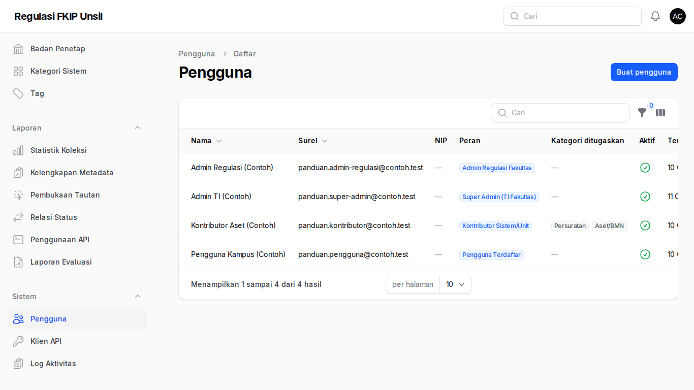
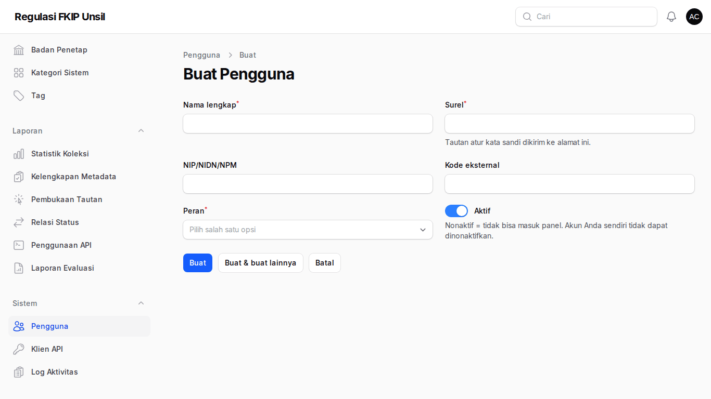
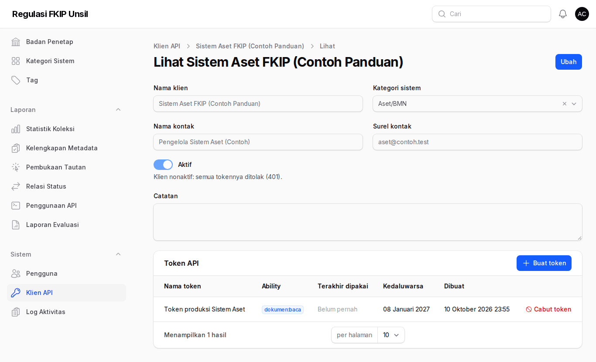
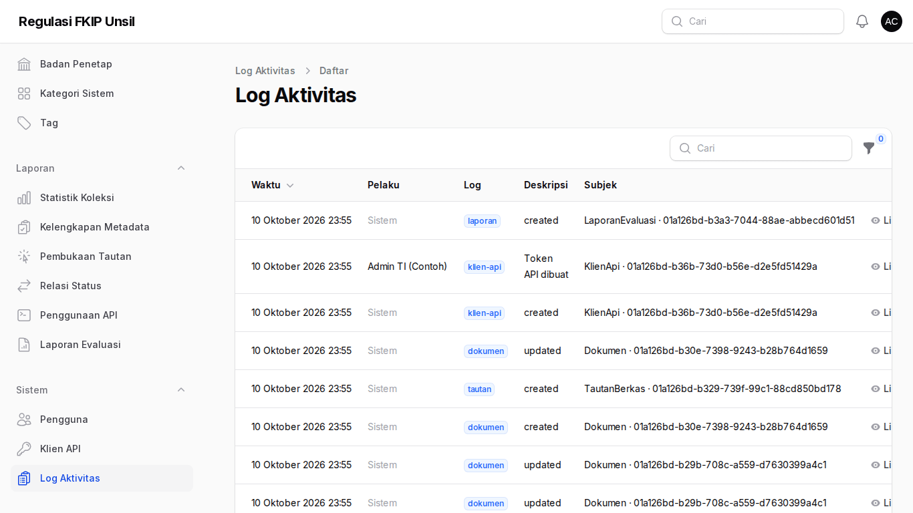
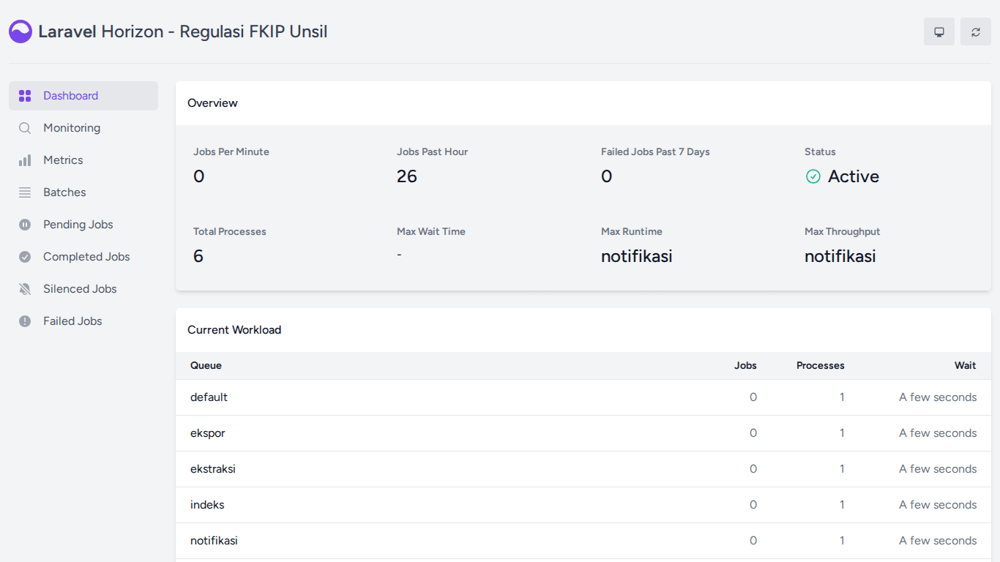

Panduan Super Admin
Tujuan peran: TI fakultas mengelola akun & peran, klien API untuk sistem FKIP lain, jejak audit, dan antrean (Horizon). Super admin juga memiliki semua hak admin regulasi.
Cara masuk
Masuk di /regulasi/admin dengan akun super-admin awal fkip@unsil.ac.id (kata sandi awal dari pengelola server). Saat masuk pertama Anda diminta memasang MFA (aplikasi autentikator) lalu diarahkan ke Profil untuk mengganti kata sandi awal.
Langkah
- Pengguna
Daftar akun beserta peran dan status aktif. Pengguna kampus mendaftar sendiri; staf dibuat di sini.
Pengguna - Buat pengguna
Isi nama, surel, peran (kontributor: pilih kategori). Surel atur kata sandi dikirim otomatis. Nonaktifkan akun yang tidak dipakai (tidak ada hapus).
Buat pengguna - Klien API & token
Buat klien per sistem; tab Token → Buat token (centang baca internal hanya bila perlu, masa berlaku 90/180/365 hari). Token polos tampil sekali; cabut bila bocor. Dokumentasi:docs/api.md.
Klien API - Log aktivitas
Siapa mengubah apa (nilai lama/baru) tanpa kata sandi/token.
Log aktivitas - Horizon
Pantau antreanekstraksi,tautan,notifikasi,ekspor; ulangi job gagal. Hanya super admin.
Horizon
Impor massal pengguna (salin-tempel)
- Di Sistem → Pengguna klik Impor massal (tempel).
- Salin baris dari Excel/Google Sheets dengan kolom berurutan nama, surel, peran, kategori lalu tempel. Peran:
super-admin,admin-regulasi,kontributor,pengguna(atau labelnya). Kategori (kode kategori sistem, beberapa dipisah|) hanya untuk kontributor. Baris judul boleh ikut. - Periksa Pratinjau: jumlah akun baru, akun yang dilewati karena surel sudah terdaftar, atau daftar galat per baris. Surel wajib
@unsil.ac.id; satu baris salah membatalkan seluruh impor. - Kosongkan Kata sandi awal agar setiap akun menerima tautan atur kata sandi lewat surel, atau isi kata sandi awal bersama (akun ditandai wajib ganti kata sandi). Impor ulang data yang sama aman: akun yang sudah ada tidak diubah.
Wajib ganti kata sandi per akun
Di form ubah pengguna nyalakan Wajib ganti kata sandi, atau pilih beberapa baris lalu aksi massal Wajibkan ganti kata sandi / Cabut kewajiban ganti kata sandi. Pengguna hanya dapat membuka Profil sampai kata sandinya diganti. Semua perubahan tercatat di Log aktivitas.
Masuk sebagai pengguna lain (impersonasi)
Untuk menelusuri keluhan, klik Masuk sebagai pada baris pengguna lalu konfirmasi. Anda melihat aplikasi persis seperti pengguna itu, dengan spanduk oranye Kembali ke akun saya di atas setiap halaman. Tidak dapat dipakai untuk diri sendiri, super-admin lain, atau akun nonaktif; profil dan kata sandi pengguna tidak dapat diubah selama impersonasi. Mulai, akhir, dan setiap tindakan selama impersonasi tercatat di Log aktivitas dengan identitas Anda.
MFA dan flag MFA_AKTIF
Selama MFA_AKTIF=true (bawaan) super-admin dan admin regulasi wajib MFA. Flag ini diatur di berkas lingkungan server oleh pemilik sistem; mematikannya menurunkan keamanan akun berhak tinggi dan tidak disarankan di produksi.
Profil & kata sandi
Buka menu pengguna (pojok kanan atas) → Profil. Anda dapat mengubah nama dan NIP/NIDN/NPM; surel adalah identitas masuk dan hanya diubah super-admin. Untuk ganti kata sandi, isi kata sandi baru, ulangi, lalu masukkan kata sandi saat ini. Kata sandi baru harus berbeda dari yang lama.
Setelah kata sandi diganti, perangkat lain yang sedang masuk dengan akun Anda otomatis keluar. Bila akun Anda ditandai wajib ganti kata sandi (mis. akun baru dengan sandi awal), setiap halaman mengarah ke Profil sampai kata sandi diganti.
Tanya-jawab
- Pengguna tidak dapat masuk?
- Periksa status aktif, verifikasi surel, dan batas 5 percobaan/menit.
- Pengguna kehilangan perangkat MFA?
- Gunakan kode pemulihan. Bila hilang, panel belum menyediakan tombol atur ulang MFA: TI fakultas mengosongkan rahasia MFA akun itu (
php artisan tinker:User::where("email", …)->first()->saveAppAuthenticationSecret(null)), lalu pengguna memasang ulang saat masuk. - Operasional server?
- Lihat
docs/DEPLOY.md(deploy, cadangan, pemulihan) dandocs/OPERASIONAL.md.
Kontak
Admin Regulasi FKIP (regulasi-fkip@unsil.ac.id) · Admin TI Fakultas untuk akun & MFA